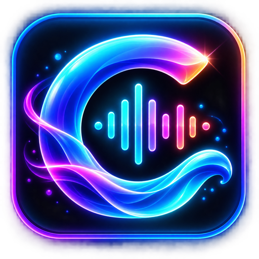
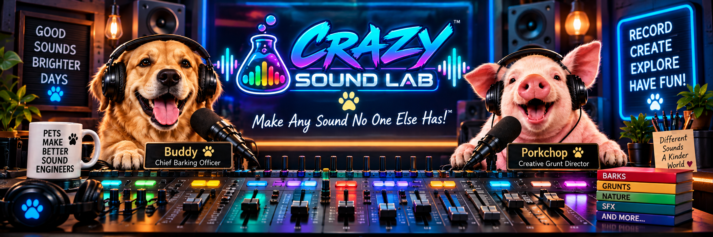

Want more? Send your voice to Crazy Mixer to change voice effects, add sounds or music, or do both.
If you would like to help keep the Lab growing with new sounds and features, your support is always appreciated.
Support is completely optional. Crazy Sound Lab remains free to use.
Tell us what you think about Crazy Voice and Sound Lab.
Comments are sent privately to Crazy Voice and Sound Lab.
💬 LEAVE A COMMENT
Tell us what you think about Crazy Voice and Sound Lab.